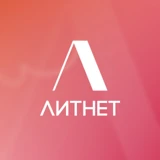

Litnet
Product Manager
сентябрь 2025 — сентябрь 2026 (1 год)
Топ-2 онлайн литературная платформа самиздата с MAU 5'000'000 пользователей, более 130'000 независимых авторов и библиотекой из 180'000+ электронных и аудиокниг.
- Провела анализ новой рекомендательной системы и подтвердила её эффективность — ARPV выросло на 33%, ARPU на 37%, общая выручка по платформе на 10%. По результатам анализа систему перевели на 100% трафика.
- Выстроила мониторинг рекомендательных поверхностей: отслеживала путь пользователя/когорт, выявляла аномалии. Обнаружила ошибку в механике продвижения авторов, подтвердила её через негативные обращения в саппорт.
- С командой ML‑инженеров проработала новую рекламную механику платформы: сформулировала гипотезы, сравнила варианты размещения и оценила их с точки зрения дохода платформы, ROAS и экономики разных авторов.
- Внедрила систему автоматической маркировки контента: промаркировано 100% существующего контента, новые тексты проходят автопроверку.
- Собирала и систематизировала фидбек пользователей: формировала user stories, участвовала в UX/UI‑тестировании и анализировала метрики новых страниц.
- Управляла кросс-функциональной командой: дизайнеры, frontend и backend‑разработчики, ML‑ и data‑инженеры.
- Инициировала создание документации для QA: с backend разобрала и оформила логику работы поверхностей, снизив количество повторных уточнений и зависимость от точечных консультаций разработчиков.
- Работала с web‑ и mobile‑продуктом: участвовала в приоритизации переноса пользовательских сценариев мобильного приложения Litnet на Flutter.